Programming Principles Learning Roadmap for Interview Preparation
1. SOLID Principles
SOLID Principles
│
├── S → Single Responsibility Principle
│ ├── A class should have only one responsibility.
│ └── Example:
│ ├── EmployeeService → Business Logic
│ └── EmployeeRepository → Database Logic
│
├── O → Open/Closed Principle
│ ├── Code should be open for extension but closed for modification.
│ └── Example:
│ └── Extension Methods in C#
│
├── L → Liskov Substitution Principle
│ ├── Child classes should replace parent classes without breaking behavior.
│ └── Example:
│ └── Bird bird = new Sparrow();
│
├── I → Interface Segregation Principle
│ ├── Clients should not depend on unused interfaces.
│ └── Example:
│ ├── IPrinter
│ ├── IScanner
│ └── Instead of one big IMachine interface
│
└── D → Dependency Inversion Principle
├── Depend on abstractions, not concrete implementations.
└── Example:
├── PaymentService depends on IPaymentGateway
└── Not directly on RazorPay class
└── IoC → Inversion of Control
├── IoC is a way to implement DIP.
├── Framework controls object creation and dependency flow.
└── Example:
└── ASP.NET Core creates controller objects automatically.
└── Dependency Injection
├── Dependencies are provided externally instead of creating manually.
└── Example:
└── services.AddScoped<IService, Service>();
├── Constructor Injection
│ ├── Dependencies injected through constructor.
│ └── Example:
│ └── public HomeController(IService service)
│
├── Property Injection
│ ├── Dependencies injected through properties.
│ └── Example:
│ └── public IService Service { get; set; }
│
├── Method Injection
│ ├── Dependencies injected through methods.
│ └── Example:
│ └── void Process(IService service)
│
└── Service Lifetimes
├── AddTransient
│ ├── Creates new instance every time.
│ └── Example:
│ └── Random number generator service
│
├── AddScoped
│ ├── One instance per HTTP request.
│ └── Example:
│ └── DbContext in ASP.NET Core
│
└── AddSingleton
├── Single instance for whole application.
└── Example:
└── Logging service / Configuration serviceSOLID Summary

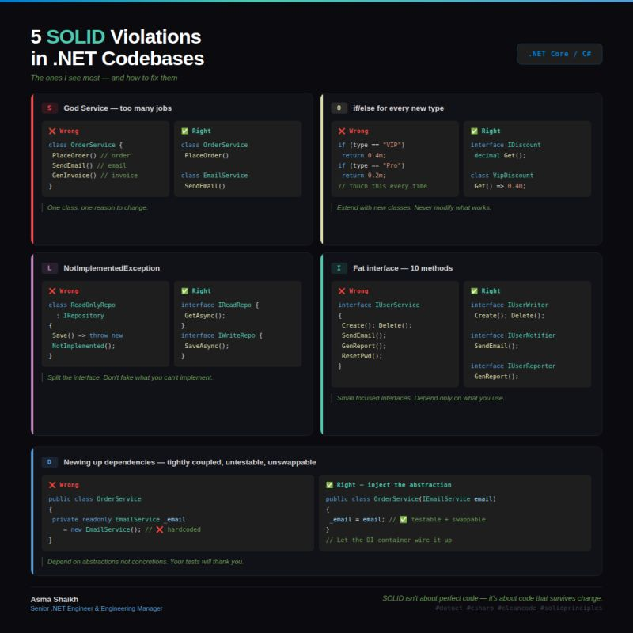
| Principle | Full Form | Meaning | Example |
|---|---|---|---|
| S | Single Responsibility Principle | A class should have only one responsibility | EmployeeService for business logic, EmployeeRepository for database logic |
| O | Open/Closed Principle | Code should be open for extension but closed for modification | Extension methods in C# |
| L | Liskov Substitution Principle | Child classes should replace parent classes without breaking behavior | Bird bird = new Sparrow(); |
| I | Interface Segregation Principle | Clients should not depend on unused interfaces | IPrinter, IScanner instead of one big IMachine |
| D | Dependency Inversion Principle | Depend on abstractions, not concrete implementations | PaymentService depends on IPaymentGateway |
IoC vs DI
| Concept | Type | Meaning |
|---|---|---|
| IoC | Principle / Concept | Transfers object creation and control to framework/container |
| DI | Design Pattern | Implements IoC by injecting dependencies from outside |
IoC Container Responsibilities
- Creates objects.
- Injects dependencies.
- Manages object lifetime.
- Resolves dependencies automatically.
2. Design Patterns

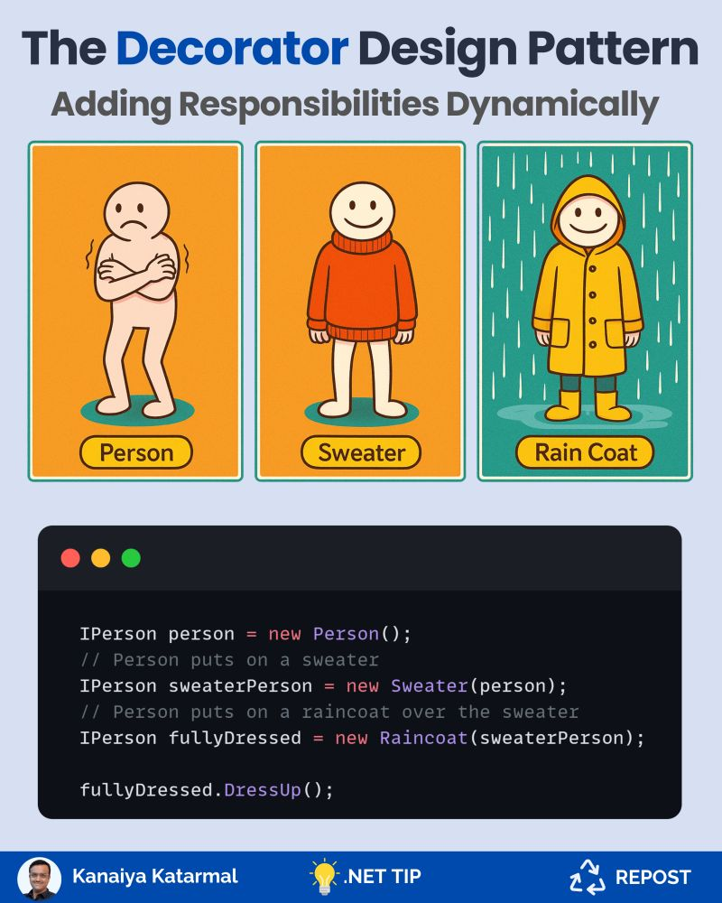
Design Patterns
│
├── Creational Patterns → Deal with object creation.
│
│ ├── Singleton
│ │ ├── Ensures only one object instance exists.
│ │ └── Example:
│ │ └── Logger class
│ │
│ ├── Factory
│ │ ├── Creates objects without exposing creation logic.
│ │ └── Example:
│ │ └── PaymentGatewayFactory
│ │
│ ├── Abstract Factory
│ │ ├── Creates related object families.
│ │ └── Example:
│ │ └── UIFactory for Windows and Mac UI controls
│ │
│ ├── Builder
│ │ ├── Builds complex objects step by step.
│ │ └── Example:
│ │ └── PizzaBuilder / ReportBuilder
│ │
│ └── Prototype
│ ├── Creates objects by cloning existing objects.
│ └── Example:
│ └── MemberwiseClone()
│
├── Structural Patterns → Deal with class and object composition.
│
│ ├── Adapter
│ │ ├── Converts one interface into another compatible interface.
│ │ └── Example:
│ │ └── Power adapter
│ │
│ ├── Decorator
│ │ ├── Adds behavior dynamically without modifying class.
│ │ └── Example:
│ │ └── LoggingDecorator around service
│ │
│ ├── Facade
│ │ ├── Provides simplified interface to complex system.
│ │ └── Example:
│ │ └── HomeTheaterFacade
│ │
│ ├── Composite
│ │ ├── Treats group of objects as single object.
│ │ └── Example:
│ │ └── Folder containing files/folders
│ │
│ ├── Proxy
│ │ ├── Controls access to another object.
│ │ └── Example:
│ │ └── Lazy loading in EF Core
│ │
│ └── Bridge
│ ├── Separates abstraction from implementation.
│ └── Example:
│ └── RemoteControl and TV
│
└── Behavioral Patterns → Deal with communication between objects.
│
├── Strategy
│ ├── Encapsulates interchangeable algorithms.
│ └── Example:
│ └── Different payment methods
│
├── Observer
│ ├── Notifies dependent objects automatically on state change.
│ └── Example:
│ └── YouTube subscribers notification
│
├── Command
│ ├── Encapsulates request as an object.
│ └── Example:
│ └── Remote control button commands
│
├── Iterator
│ ├── Sequentially accesses collection elements.
│ └── Example:
│ └── foreach loop
│
├── Mediator
│ ├── Centralizes communication between objects.
│ └── Example:
│ └── Chat room mediator
│
├── State
│ ├── Changes behavior based on object state.
│ └── Example:
│ └── ATM machine states
│
└── Chain of Responsibility
├── Passes request through chain of handlers.
└── Example:
└── ASP.NET Core Middleware PipelineCreational Patterns
| Pattern | Meaning | Example |
|---|---|---|
| Singleton | Ensures only one object instance exists | Logger class |
| Factory | Creates objects without exposing creation logic | PaymentGatewayFactory |
| Abstract Factory | Creates related object families | UI factory for Windows and Mac controls |
| Builder | Builds complex objects step by step | PizzaBuilder, ReportBuilder |
| Prototype | Creates objects by cloning existing objects | MemberwiseClone() |
Structural Patterns
| Pattern | Meaning | Example |
|---|---|---|
| Adapter | Converts one interface into another compatible interface | Power adapter |
| Decorator | Adds behavior dynamically without modifying class | LoggingDecorator around service |
| Facade | Provides simplified interface to complex system | HomeTheaterFacade |
| Composite | Treats group of objects as single object | Folder containing files/folders |
| Proxy | Controls access to another object | Lazy loading in EF Core |
| Bridge | Separates abstraction from implementation | RemoteControl and TV |
Behavioral Patterns
| Pattern | Meaning | Example |
|---|---|---|
| Strategy | Encapsulates interchangeable algorithms | Different payment methods |
| Observer | Notifies dependent objects automatically on state change | YouTube subscribers notification |
| Command | Encapsulates request as an object | Remote control button commands |
| Iterator | Sequentially accesses collection elements | foreach loop |
| Mediator | Centralizes communication between objects | Chat room mediator |
| State | Changes behavior based on object state | ATM machine states |
| Chain of Responsibility | Passes request through chain of handlers | ASP.NET Core Middleware Pipeline |
3. Architectural Patterns
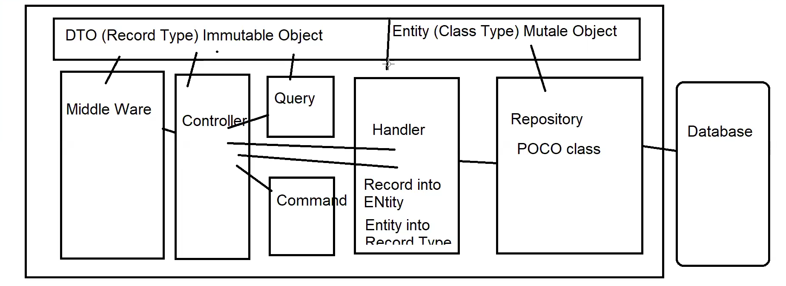
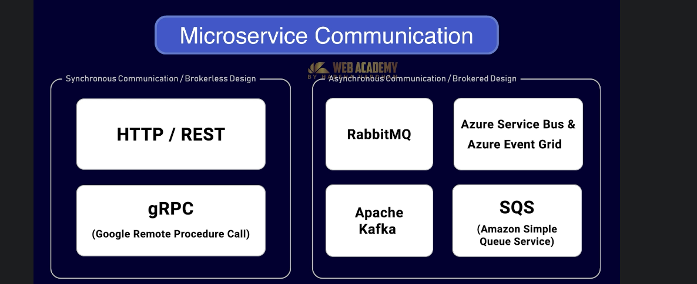
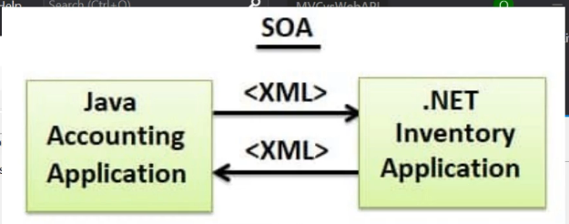
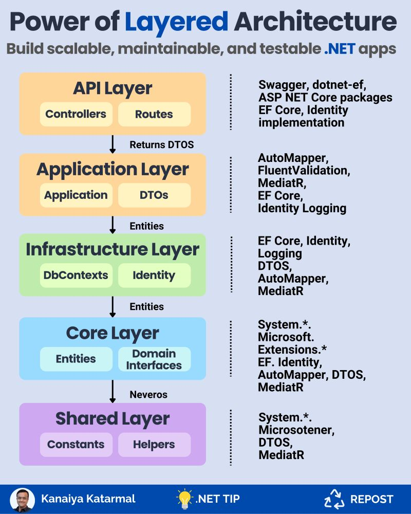
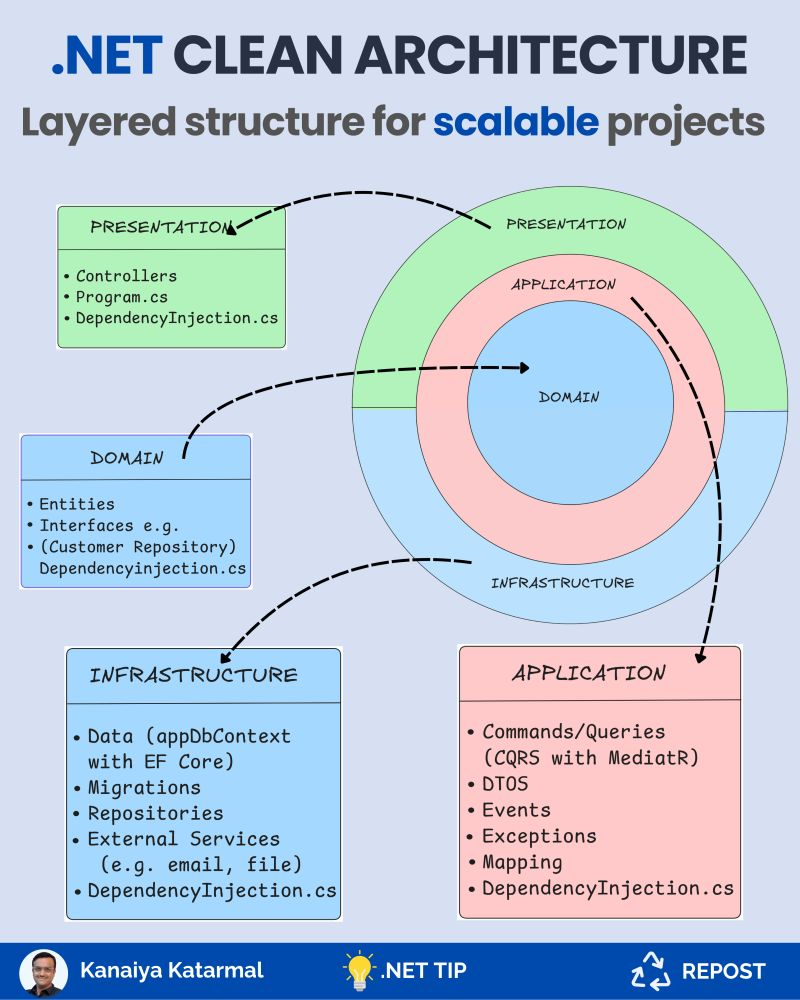
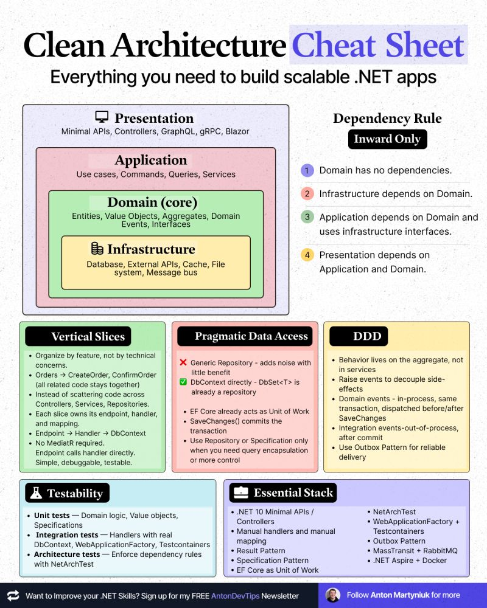
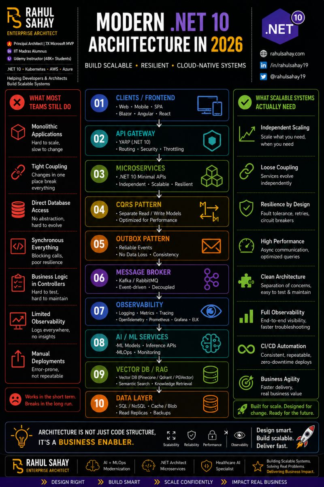
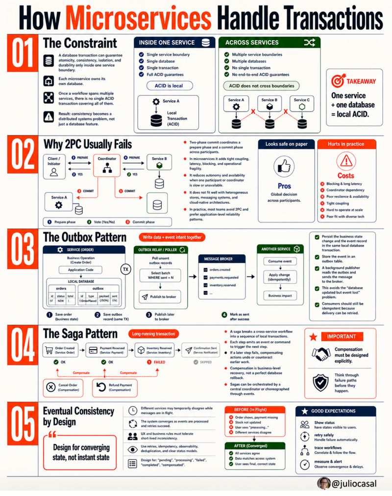
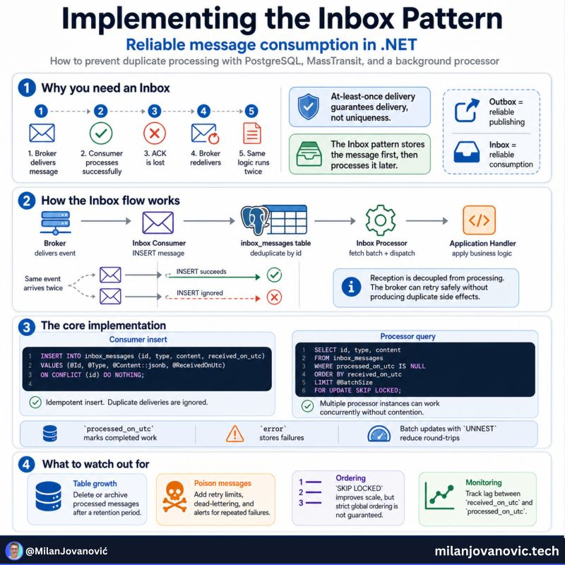
Architectural Patterns → High-level application structure design patterns.
│
├── MVC
│ ├── Separates application into Model, View, and Controller.
│ └── Example:
│ └── ASP.NET Core MVC application
│
├── Layered Architecture
│ ├── Organizes code into layers like UI, Business, and Data.
│ └── Example:
│ └── UI Layer → Service Layer → Repository Layer
│
├── Clean Architecture
│ ├── Separates business logic from frameworks and infrastructure.
│ └── Example:
│ └── Domain, Application, Infrastructure, API projects
│
├── Microservices
│ ├── Breaks application into small independent services.
│ └── Example:
│ └── Payment Service, User Service, Order Service
│
├── Event-Driven Architecture
│ ├── Components communicate using events/messages.
│ └── Example:
│ └── RabbitMQ / Kafka event processing
│
└── CQRS → Command Query Responsibility Segregation
├── Separates read and write operations into different models.
└── Example:
└── MediatR in ASP.NET Core
├── Command
│ ├── Handles create/update/delete operations.
│ └── Example:
│ └── CreateOrderCommand
│
└── Query
├── Handles read/fetch operations.
└── Example:
└── GetOrderByIdQueryArchitectural Pattern Summary
| Pattern | Meaning | Example |
|---|---|---|
| MVC | Separates application into Model, View, and Controller | ASP.NET Core MVC application |
| Layered Architecture | Organizes code into layers like UI, Business, and Data | UI Layer → Service Layer → Repository Layer |
| Clean Architecture | Separates business logic from frameworks and infrastructure | Domain, Application, Infrastructure, API projects |
| Microservices | Breaks application into small independent services | Payment Service, User Service, Order Service |
| Event-Driven Architecture | Components communicate using events/messages | RabbitMQ / Kafka event processing |
| CQRS | Separates read and write operations into different models | MediatR in ASP.NET Core |
CQRS
| Part | Meaning | Example |
|---|---|---|
| Command | Handles create, update, delete operations | CreateOrderCommand |
| Query | Handles read/fetch operations | GetOrderByIdQuery |